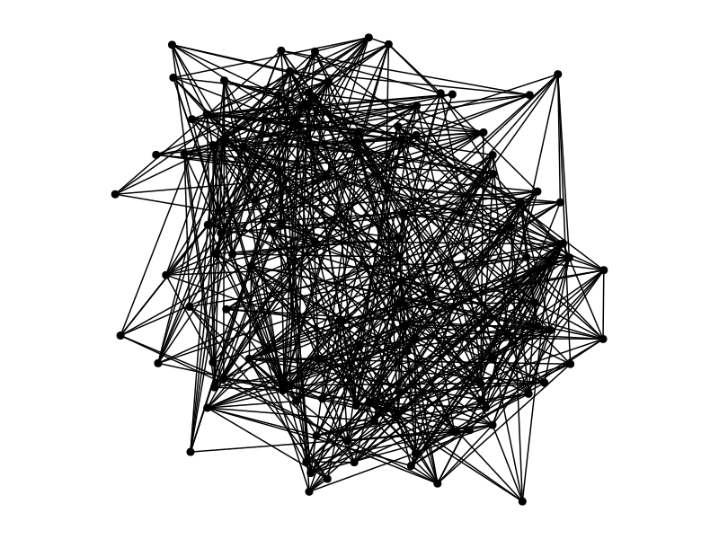
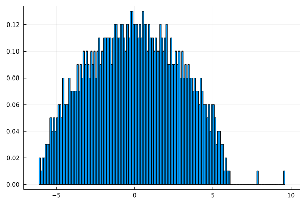
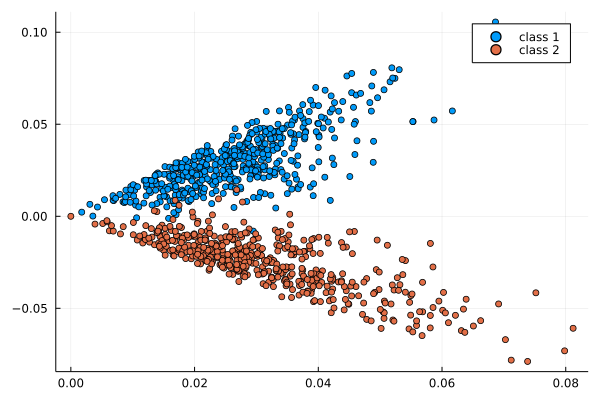
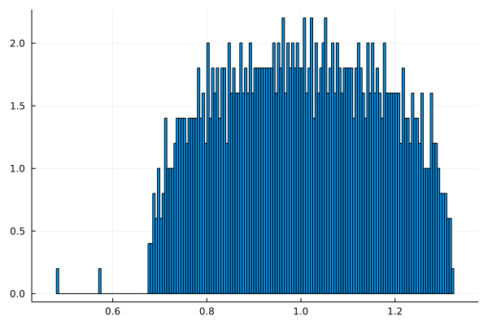
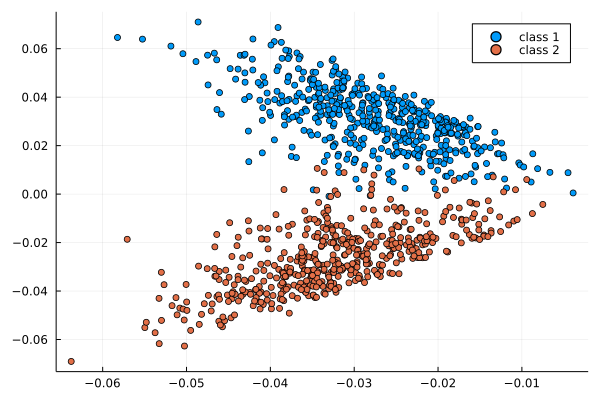
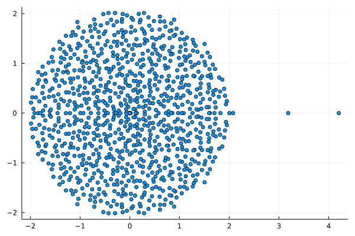
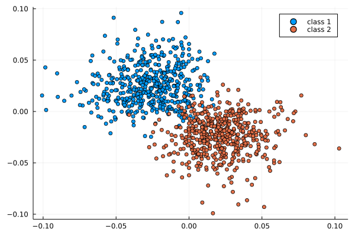
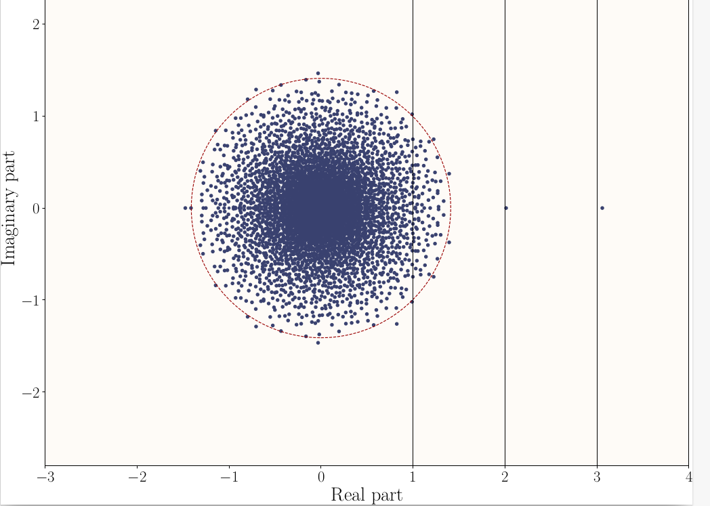
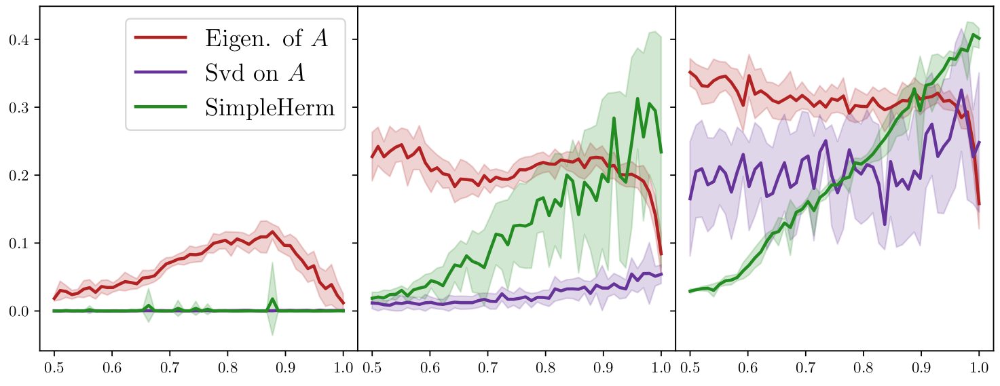

Non-hermitian matrices for graph clustering?
Simon Coste - ENS
GDR ISIS, Mars 2022
 
Clustering algorithms in a nutshell
| Step | Spectral algorithms | DL | |
|---|---|---|---|
| 1 | network representation | laplacian, adjacency, non-backtracking, Bethe-Hessian… | tensorized representations of the graph |
| 2 | low-dim node embedding | eigenvectors, singular vectors | equivariant GNNs |
| 3 | clustering on the embedding | K-means, EM | linear classifier |
adj.
 
lap.
 
asy.
 
First challenge: sparsity
A graph is sparse when n_\mathrm{edges} \approx n_\mathrm{nodes}.
classical spectral clustering works when graphs are not too sparse
classical spectral clustering doesn’t work when graphs are sparse
Potential reasons
Eigenvalues of normal matrices (including SVD) are aligned with high-degrees.
Sparse graphs often have very heterogeneous degrees.
Second challenge: directedness
many (most?) real-world networks are directed
most clustering methods represent digraphs with normal matrices (including SVD-based methods)
Takeaway messages: Asymmetry helps
non-Hermitian matrices have eigenvalues, too
non-Hermitian matrices should not frighten you
[Chen, Cheng, Fan, 18] [Bordenave, C, Nadakuditi, 20] [C, Stephan, 21]
Some spectral theory of sparse directed graphs
A model of directed inhomogeneous random graphs
Parameters: size n super large, connectivity matrix P=(P_{i,j})
A_{i,j} = edge from node i to node j
A_{i,j} = \mathrm{Bernoulli}(P_{i,j}) ~~~~~~~~~~~~~~~ (\mathrm{independent})
Sparsity \iff \Vert P \Vert_{\infty} = O(1/n)
\mathbf{E}[A] = P
If P has a block-structure as in a SBM, this structure is visible in the eigenvectors
\lambda_i = eigenvalues of P with left/right eigenvectors u_i, v_i.
\mu_i = eigenvalues of A with left/right eigenvectors \varphi_i, \psi_i (random).
Theorem (C, Stephan, 2021+)
t = \sqrt{\Vert P \Vert} ~~~~~~~~~~~~ \text{(the crucial threshold)}
- if |\lambda_i| > t then:
\mu_i = \lambda_i + o(1) ~~~~~ \text{and} ~~~~~|\langle u_i, \varphi_i\rangle| \to \mathrm{something}_i
- other eigenvalues of A are smaller than t + o(1).
Usage: estimate u_i from \varphi_i, then find the block-structure
Example
Here \mathbf{E}[A] has 3 eigenvalues 1,2,3 and t=\sqrt{\Vert P \Vert} \approx 1,37.

Directed Stochastic Block Models
SBM with a block-wise path structure:
P = \frac{d}{n}\begin{bmatrix}1 & 1- \eta & 0 \\ \eta & 1 & 1-\eta & 0 \\ 0 & \eta & 1 & 1 - \eta & \ddots \\ &&&&&&&\\ & & \ddots & \ddots & \ddots \\ \\ \end{bmatrix}
Eigenvalues of P and threshold t=\sqrt{\Vert P \Vert}:
explicit in terms of k (number of blocks), d (density) and \eta (asymmetry)
Green: eig. of an ad hoc skew-Hermitian matrix ([Laenen & Sun 20]) .
d=2 ~~~~~~~~~~~~~~~~~~~~~~~~~ d=5 ~~~~~~~~~~~~~~~~~~~~~~~~~ d=10 
(performance metric= mean adjusted overlap)
Conclusion
Question: best graph representations for GNNs?
- [Dasoulas, Lutzeyer, Vazirgiannis 21] parametrize their graph matrix representation using a few basic building blocks:
\alpha_1 D^{\gamma_1} + \alpha_2 D^{\gamma_2}A D^{\gamma_3} + \alpha_3 I
They optimize this in \alpha_i, \gamma_j for a fixed GNN architecture.
What happens if you allow truly non-normal representations,
even if the graph is undirected?
and C. Bordenave, L. Massoulié, L. Stephan, L. Dall’Amico…